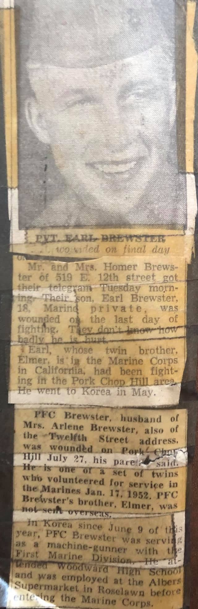
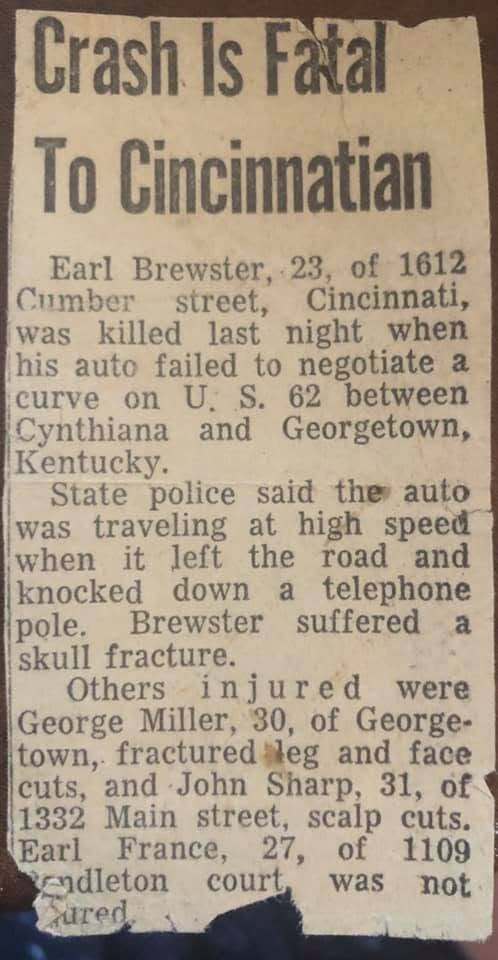
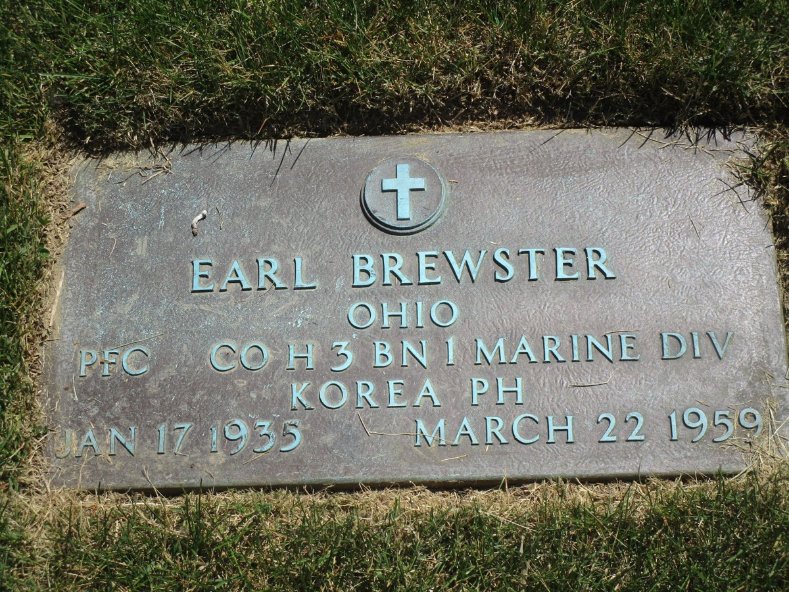

17 Jan 1935 · age 0 Born in Tennessee, a twin with Elmer (probably Morgan County)
1940 · age 5 Living with his family in Morgan County, Tennessee
1950 · age 15 Living with his family at 517 12th Street, Cincinnati, Ohio
Before 1952 Attended Woodward High School and worked at Albers Supermarket in Roselawn
17 Jan 1952 · age 17 Joined the U.S. Marine Corps on his 17th birthday with his twin Elmer
By Jul 1953 · age 18 Married to Arlene, who was living with his parents at 519 E. 12th Street
June 1953 · age 18 Arrived in Korea with H/3/1. July, August and October rosters list him as MOS 0311 (rifleman); the January 1954 roster later lists MOS 0331 (machine gunner)
24–27 Jul 1953 · age 18 Wounded during the H/3/1 Hill 111 fighting. Fold3 casualty index gives 24 July; family newspaper says 27 July. Grave marker records PH (Purple Heart)
1956 Daughter Cheryl Ann born in Cincinnati
By 1959 Working as a printer; living at 1612 Cumber Street, Cincinnati
22 Mar 1959 · age 24 Killed when his car left a curve on U.S. 62 in Harrison County, Kentucky
1959 Buried at Spring Grove Cemetery, Cincinnati, Section 139
Life Story
Earl Brewster and his twin brother Elmer were born on January 17, 1935, in Tennessee, sons of Homer William Brewster Sr. and Sarah Hazel Kelly. The family was living in Morgan County in 1940, and by 1950 they had moved north to Cincinnati, where Earl grew up on 12th Street, went to Woodward High School and worked at the Albers Supermarket in Roselawn.
On their seventeenth birthday, January 17, 1952, Earl and Elmer volunteered for the Marine Corps together. Elmer stayed in California, but Earl went to Korea in June 1953 with Company H, 3rd Battalion, 1st Marine Division. The July, August and October rosters list him as a rifleman (MOS 0311); the January 1954 roster lists him as a machine-gunner (MOS 0331). The family newspaper described him as a machine-gunner when he was wounded, so the exact timing of the MOS change remains unresolved. The family newspaper reported that he was wounded on July 27, 1953, the last day of the war; the Fold3 Marine casualty index instead dates his WIA to July 24 and identifies unit H-3-1, service number 1291045. H/3/1's unit history places the company in the Hill 111 fighting from July 24–27. His grave marker records PH (Purple Heart). His parents told the newspaper Pork Chop Hill; retain their account while noting that the unit history points to Hill 111 as the likely company area. He was eighteen, and already married to Arlene.
Back in Cincinnati, Earl and Arlene raised a young family, and he worked as a printer. On the night of March 22, 1959, his car failed to take a curve on U.S. 62 between Cynthiana and Georgetown, Kentucky, and he was killed. He was twenty-four. He was buried at Spring Grove Cemetery in Cincinnati under a bronze veteran's marker that records his company, his service in Korea and his Purple Heart.
Photo Gallery
PFC Earl Brewster, USMC, 1953. Newspaper portrait, family collection (paper not named)

"Pvt. Earl Brewster wounded on final day," Cincinnati newspaper, about 28–31 July 1953. Family collection

"Crash Is Fatal To Cincinnatian," March 1959. Family collection, shared on Geni

Grave marker, Spring Grove Cemetery. Photo by HCGS Ohio, 31 May 2023, Find a Grave
Sources and Evidence
Grave marker, Spring Grove Cemetery: "EARL BREWSTER / OHIO / PFC CO H 3 BN 1 MARINE DIV / KOREA PH / JAN 17 1935 MARCH 22 1959" (photo by HCGS Ohio, 2023, and a family photo)
Find a Grave, memorial 78897545: 17 Jan 1935 – 22 Mar 1959; Spring Grove Cemetery, Section 139, Lot E, Space 43
Kentucky Deaths, 1911–1967, Earl Brewster: age 24, born Tennessee, died 1959 on the Leesburg Pike, Harrison County; printer; burial Cincinnati; father Homer Brewster, mother Sarah Kelly (FamilySearch index; original Kentucky death certificate image 2418 also inspected: records Spring Grove Cemetery burial 25 March 1959 and marital status married, but does not name the wife)
Kentucky Death Index, 1911–2000, Earl Brewster: died 22 March 1959, Harrison County, Kentucky
1950 U.S. census, 517 12th Street, Cincinnati: Earl, 15, son, born Tennessee, with Homer, Sarah, Eugene, his twin Elmer, Aleene and Homer Jr.
1940 U.S. census, Morgan County, Tennessee (FamilySearch K4ZX-8KM): Earl, 5, with his family (as summarized; image not re-read)
Newspaper article, "Pvt. Earl Brewster wounded on final day," about 28–31 July 1953 (paper not named; family collection): reports enlistment with Elmer on 17 January 1952, Korea from 9 June, machine-gunner with the First Marine Division, wounded 27 July, and wife Mrs. Arlene Brewster; also names Woodward High School and Albers Supermarket. The Fold3 casualty index instead gives 24 July 1953.
Fold3, U.S. Marine Corps Casualty Indexes, 1940–1958, Earl Brewster: index lists WIA, casualty date 24 July 1953, unit H-3-1, service number 1291045. Its conflict label says World War II, but the 1953 date and unit place this entry in the Korean War period; no image was available.
Paul I. Gulick, H/3/1 Marines in Korea, revised 2008: lists PFC Earl Brewster among the June 1953 replacement draft; August 1953 H/3/1 roster gives service number 1291045 and MOS 0311 (rifleman); January 1954 roster records MOS 0331 (machine gunner); the unit history's March chronology records him dropped from H/3/1 on 10 March 1954. The history documents H/3/1 action at Hills 111, 24–27 July 1953.
Kentucky death certificate, 1959 series, FamilySearch image 2418, Earl Brewster: directly inspected; born 17 January 1935 Tennessee; age 24; father Homer Brewster, mother Sarah Kelly; printer; married; accident 22 March 1959 on Highway 62, Leesburg, Harrison County; burial Spring Grove Cemetery, Cincinnati, 25 March 1959. Wife not named in the visible fields.
Newspaper article, "Crash Is Fatal To Cincinnatian," March 1959 (paper not named; family collection): killed on U.S. 62 between Cynthiana and Georgetown, Kentucky; of 1612 Cumber Street; gives his age as 23
Obituary of Cheryl Ann Brewster Horne, died 23 May 2015, Lincolnton, North Carolina, Warlick Funeral Home: born 2 October 1956 in Cincinnati "to Arline Stone Gayhart and the late Earl Brewster"; names her brother Earl Brewster and sisters Carolyn Coomes, Adele Bowen, Maureen Fields and Kristy Duckett. (The heading misprints her birth year as 1946; the text gives 1956 and her age as 58.)
Obituary of Kristy Ann (Gayhart) Duckett, died 18 December 2025, Hodapp Funeral Homes: born 25 December 1961 to Wilkie and Arline Gayhart; names her late sister Cheryl Horne and siblings Earl Brewster, Carolyn Coomes, Adele Bowen and Maureen Fields
: Earl Brewster Jr. is known personally to the family as Earl's son
Homer Sr. × Sarah profile Doc and family research notes (family collection)
Military: U.S. Marine Corps, enlisted 17 January 1952 with his twin Elmer; PFC, Company H, 3rd Battalion, 1st Marine Division; service no. 1291045; MOS 0311 (rifleman) in August 1953, later 0331 (machine gunner) in January 1954; H/3/1 rostered him in Korea from June 1953 through January 1954 WIA: Fold3 index says 24 July 1953; family newspaper says 27 July; grave marker records PH (Purple Heart) The family was told he was hit on Pork Chop Hill. That hill was in the U.S. Army's sector and was given up on 11 July 1953; the Marines' last fight, 24–27 July, was at Boulder City (Hill 119) and Hill 111.
Work: Before the Marines: Albers Supermarket, Roselawn, Cincinnati. In 1959: printer
Children: Geni lists Cheryl Ann Horne with a birth date of 2 October 1946, when Earl was eleven. That year is a misprint copied from the heading of her obituary; the obituary text gives 1956 and her age as 58, so she was born during Earl's marriage.
Kristy Duckett, Arline's daughter, is not Earl's child: she was born on 25 December 1961, after his death, to Wilkie and Arline Gayhart. Geni shows Earl as her stepfather, which cannot be right.
Carolyn Coomes and Adele Bowen are named as sisters of Earl's daughter Cheryl, but no record yet names their father. Ohio birth records (Ohio Department of Health, from 1908) for each child, or Arline's own obituary in time, would settle which children were Earl's.
Earl's Kentucky death certificate (Harrison County, 1959) should name the informant and his wife. The Cincinnati Enquirer or Post death notice, about 23–26 March 1959, may name his wife and children.
No marriage record for Earl and Arlene has been found. Try Hamilton County, Ohio, and Campbell or Kenton County, Kentucky, about 1952–53.
Unit: the grave marker gives "CO H 3 BN 1 MARINE DIV" without the regiment. Fold3 casualty index identifies H-3-1 and service number 1291045; the H/3/1 August 1953 roster independently gives the same service number and MOS 0311. This strongly identifies his unit as How Company, 3rd Battalion, 1st Marines (H/3/1); the original service file/casualty card would provide final confirmation.
"Pork Chop Hill" comes from his parents' account to the newspaper. Pork Chop Hill was held by the U.S. Army 7th Infantry Division and was given up on 11 July 1953, so it is unlikely to be where a Marine was wounded on 27 July.
The 1959 newspaper gave his age as 23; he was 24. The newspaper name and date of both clippings are not shown on them.
Birthplace: the Kentucky death index and the 1950 census give Tennessee. His twin's Social Security application gives Brewstertown, Tennessee, which is probably his birthplace too, but this has not yet been independently established for Earl.
Geni carries "(Twin)" in Earl's name; it is shown here as a note, not part of his name.
DNA
No DNA matches linked yet.
Family Notes
No family-notes link is listed on this profile.
Profile history: Updated 7 November 2026: his children linked to their profile Docs; Maureen and Adele ruled his daughters. Updated 6 November 2026 with his death record, grave marker and burial, his Marine service and Korea wound, his marriage, his children, both newspaper articles, a portrait and a full life story.